Customizing the IDE
The PureBasic IDE provides many options to customize or disable some of its features in order to become the perfect tool for you.General
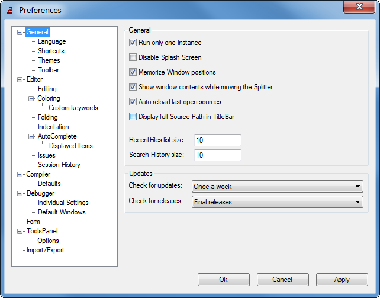
Options that affect the general behavior of the IDE.
Run only one Instance
If set, prevents the IDE from being opened more than once. Clicking on a PB file in the explorer will open it in the already existing IDE instance instead of opening a new one.
Disable Splash screen
Disables the splash screen that is displayed on start-up.
Memorize Window positions
Remembers the position of all IDE windows when you close them. If you prefer to have all windows open at a specific location and size, enable this option, move all windows to the perfect position, then restart the IDE (to save all options) and then disable this option to always open all windows in the last saved position.
Show window contents while moving the Splitter
Enable this only if you have a fast computer. Otherwise moving the Splitter bar to the Error Log or Tools Panel may flicker a lot.
Auto-Reload last open sources
On IDE start-up, opens all the sources that were open when the IDE was closed the last time.
Display full Source Path in Title bar
If set, the IDE title bar will show the full path to the currently edited file. If not, only the filename is shown.
Recent Files list
This setting specifies how many entries are shown in the "Recent Files" submenu of the File menu.
Search History size
This setting specifies how many recent search words are remembered for "Find/Replace" and "Find in Files"
Check for updates
Specifies how often the IDE should check on the purebasic.com server for the availability of new updates. An update check can also be performed manually at any time from the "Help" menu.
Check for releases
Specifies which kind of releases should cause a notification if they are available.
General - Language
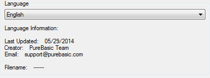
This allows you to change the language of the IDE. The combo box shows the available languages, and you can view some information about the language file (for example who translated it and when it was last updated).
General - Shortcuts
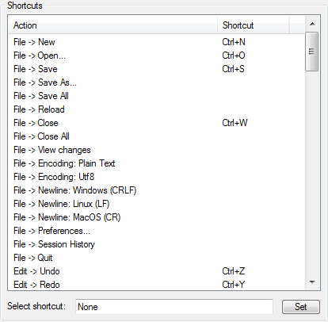
Here you can fully customize all the shortcut commands of the IDE. Select an entry from the list, select the shortcut field, enter the new key combination and click "Set" to change the entry.
Note that Tab & Shift+Tab are reserved for block-indentation and un-indentation and cannot be changed. Furthermore some key combination might have a special meaning for the OS and should therefore not be used.
General - Themes
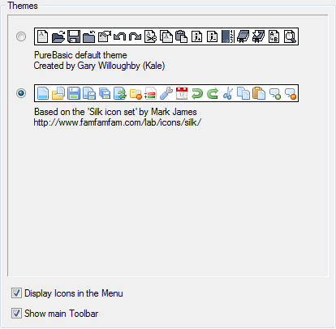
This section shows the available icon themes for the IDE and allows to select the theme to use. The IDE comes with two themes by default.
More themes can be easily added by creating a zip-file containing the images (in png format) and a "Theme.prefs" file to describe the theme. The zip-file has to be copied to the "Themes" folder in the PureBasic installation directory to be recognized by the IDE. The "SilkTheme.zip" file can be used as an example to create a new theme.
Display Icons in the Menu
Allows to hide/show the images in the IDE menus.
Show main Toolbar
Allows to hide/show the main toolbar in order to gain space for the editing area.
General - Toolbar
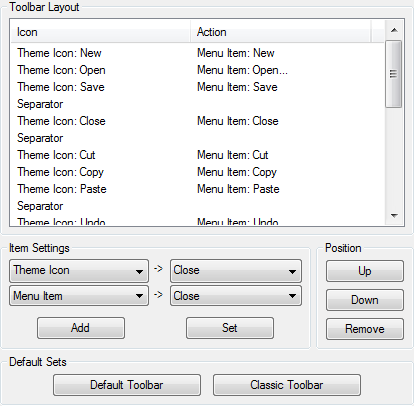
This allows to fully customize the main Toolbar. By selecting an entry and using the Buttons in the "Position" section, you can change the order. The "Item Settings" section can be used to modify the entry or add a new one. New ones are always added at the end of the list.
Types of items:
Separator : a vertical separator line.
Space : an empty space, the size of one toolbar icon.
Standard Icon : allows you to select a OS standard icon from the combo box on the right.
IDE Icon : allows you to select one of the IDE's own icons in the combo box on the right.
Icon File : allows you to specify your own icon file to use in the edit box on the right (PNG files are supported on all platforms, Windows additionally supports icon files).
If you do not select a separator or space, you can specify an action to carry out when the button is pressed:
Menu Item : carries out the menu command specified in the combo box on the right.
Run tool : executes the external tool specified in the combo box on the right.
The "Default Sets" section contains two standard toolbar sets which you can select, and later modify.
Editor
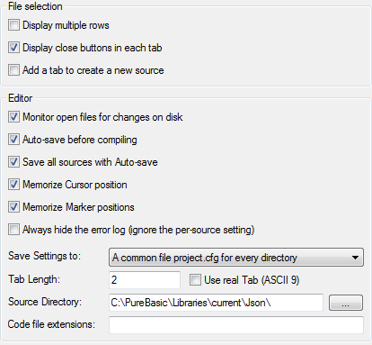
Settings that affect the management of the source codes.
Monitor open files for changes on disk
Monitors all open files for changes that are made to the files on disk while they are edited in the IDE. If modifications are made by other programs, a warning is displayed with the choice to reload the file from disk.
Auto-save before compiling
Saves the current source code before each compile/run or executable creation. Note that any open include files are not automatically saved.
Save all sources with Auto-save
Saves all sources instead of just the current one with one of the Auto-save options.
Memorize cursor position
Saves the current cursor position, as well as the state of all folding marks with the compiler options for the source file.
Memorize Marker positions
Saves all the Markers with the options for the source file.
Always hide the error log
The error log can be shown/hidden on a per-source basis. This option provides a global setting to ignore the per-source setting and never display the error log. It also removes the corresponding menu entries from the IDE menu.
Save settings to
This option allows to specify where the compiler options of a source file are saved:
The end of the Source file
Saves the settings as a special comment block at the end of each source file.
The file <filename>.pb.cfg
Creates a .pb.cfg file for each saved source code that contains this information.
A common file project.cfg for every directory
Creates a file called project.cfg in each directory where PB files are saved. This one file will contain the options for all files in that directory.
Don't save anything
No options are saved. When reopening a source file, the defaults will always be used.
Tab Length
Allows to specify how many spaces are inserted each time you press the Tab key.
Use real Tab (Ascii 9)
If set, the tab key inserts a real tab character instead of spaces. If not set, there are spaces inserted when Tab is pressed.
Note that if real tab is used, the "Tab Length" option specifies the size of one displayed tab character.
Source Directory
Specifies the default directory used in the Open and Save dialogs if no other files are currently open (if another file is open, its path will be used as default).
Set this to the path were you usually save the source codes.
Code file extensions
The IDE detects code files by their extension (pb, pbi or pbf by default). Non-code files are edited in a "plain text" mode in which code-related features are disabled. This setting causes the IDE to recognize further file extensions as code files. The field can contain a comma-separated list (i.e. "pbx, xyz") of extensions to recognize.
Editor - Editing
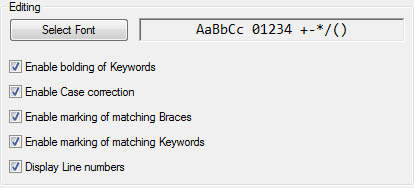
Use "Select Font" to change the font used to display the source code. To ensure a good view of the source code, it should be a fixed-size font, and possibly even one where bold characters have the same size as non-bold ones.
Enable bolding of keywords
If your font does not display bold characters in the same size as non-bold ones, you should disable this option. If disabled, the keywords will not be shown as bold.
Enable case correction
If enabled, the case of PureBasic keywords, PureBasic Functions as well as predefined constants will automatically be corrected while you type.
Enable marking of matching Braces
If enabled, the brace matching the one under the cursor will be highlighted.
Enable marking of matching Keywords
If enabled, the keyword(s) matching the one under the cursor will be underlined.
Display line numbers
Shows or hides the line number column on the left.
Editor - Coloring
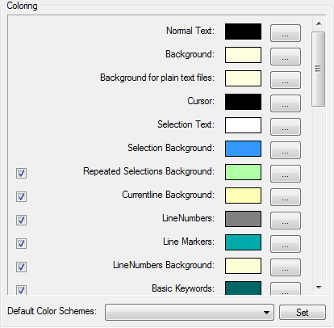
Here you can change the color settings for the syntax coloring, as well as the debugger marks. Default color schemes can be selected from the box on the bottom, and also modified after they have been set. Individual color settings can be disabled by use of the checkboxes.
Note: The 'Accessibility' color scheme has (apart from high-contrast colors) a special setting to always use the system color for the selection in the code editor. This helps screen-reader applications to better detect the selected text.
Editor - Coloring - Custom Keywords
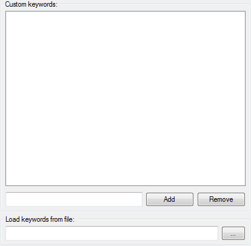
In this section, a list of custom keywords can be defined. These keywords can have a special color assigned to them in the coloring options and the IDE will apply case-correction to them if this feature is enabled. This allows for applying a special color to special keywords by preprocessor tools or macro sets, or to simply have some PB keywords colored differently.
Note that these keywords take precedence above all other coloring in the IDE, so this allows to change the color or case correction even for PureBasic keywords.
The keywords can be either entered directly in the preferences or specified in a text file with one keyword per line (or both).
Editor - Folding
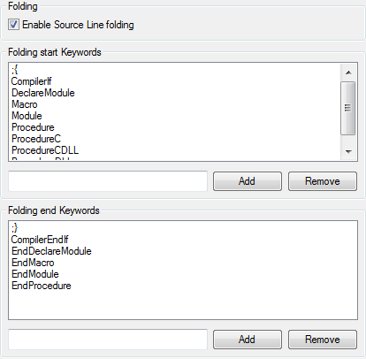
Here you can set the keywords in the source code that start/end a foldable section of code. You can add any number of words that will mark such a sections. You can also choose to completely disable the folding feature.
Words that are found inside comments are ignored, unless the defined keyword includes the comment symbol at the start (like the default ";{" keyword).
A keyword may not include spaces.
Editor - Indentation
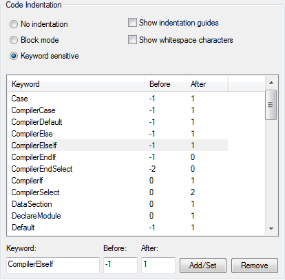
Here you can specify how the editor handles code indentation when the return key is pressed.
No indentation
Pressing return always places the cursor at the beginning of the next line.
Block mode
The newly created line gets the same indentation as the one before it.
Keyword sensitive
Pressing the return key corrects the indentation of both the old line and the new line depending on the keywords on these lines. The rules for this are specified in the keyword list below. These rules also apply when the "Reformat indentation" item in the edit menu is used.
Show indentation guides
Causes vertical lines to be shown to visualize the indentation on each line. This makes it easier to see which source lines are on the same level of indentation.
Show whitespace characters
Causes whitespace characters to be visible as little dots (spaces) or arrows (tab characters).
The keyword list contains the keywords that have an effect on the indentation. The "Before" setting specifies the change in indentation on the line that contains the keyword itself while the "After" setting specifies the change that applies to the line after it.
Editor - Auto complete
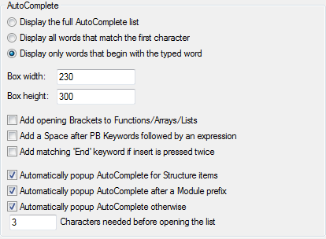
Display the full Auto complete list
Always displays all keywords in the list, but selects the closest match.
Display all words that start with the first character
Displays only those words that start with the same character as you typed. The closest mach is selected.
Display only words that start with the typed word
Does not display any words that do not start with what you typed. If no words match, the list is not displayed at all.
Box width / Box height
Here you can define the size of the auto complete list (in pixel). Note that these are maximum values. The displayed box may become smaller if there are only a few items to display.
Add opening Brackets to Functions/Arrays/Lists
Will automatically add a "(" after any function/Array/List inserted by auto complete. Functions with no parameters or lists get a "()" added.
Add a Space after PB Keywords followed by an expression
When inserting PB keywords that cannot appear alone, a space is automatically added after them.
Add matching ‘End' keyword if Tab/Enter is pressed twice
If you press Tab or Enter twice, it will insert the corresponding end keyword (for example "EndSelect" to "Select" or "EndIf " to "If") to the keyword you have just inserted. The end keyword will be inserted after the cursor, so you can continue typing after the first keyword that was inserted.
Automatically popup AutoComplete for Structure items
Displays the list automatically whenever a structured variable or interface is entered and the "\" character is typed after it to show the list of possible structure fields. If disabled, the list can still be displayed by pressing the keyboard shortcut to open the AutoComplete window (usually Ctrl+Space, this can be modified in the Shortcuts section of the Preferences).
Automatically popup AutoComplete outside of Structures
Displays the list automatically when the current word is not a structure after a certain amount of characters has been typed, and a possible match in the list is found. If disabled, the list can still be displayed by pressing the assigned keyboard shortcut.
Characters needed before opening the list
Here you can specify how many characters the word must have minimum before the list is automatically displayed.
Editor - Auto complete - Displayed items
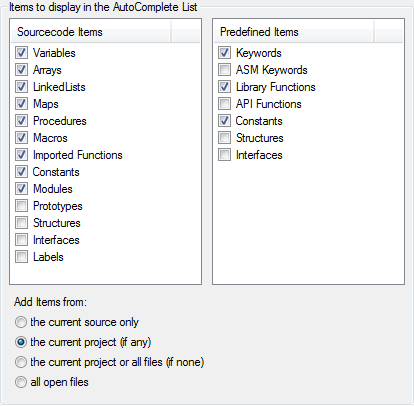
This shows a list of possible items that can be included with the possible matches in the AutoComplete list.
Source code Items
Items defined in the active source code, or other open sources (see below).
Predefined Items
Items that are predefined by PureBasic, such as the PureBasic keywords, functions or predefined constants.
Add Items from: the current source only
Source code items are only added from the active source code.
Add Items from: the current project (if any)
Source code items are added from the current project if there is one. The other source codes in the project do not have to be currently open in the IDE for this.
Add Items from: the current project or all files (if none)
Source code items are added from the current project. If the current source code does not belong to the open project then the items from all open source codes will be added.
Add Items from: all open files
Source code items are added from all currently open source codes.
Editor - Issues
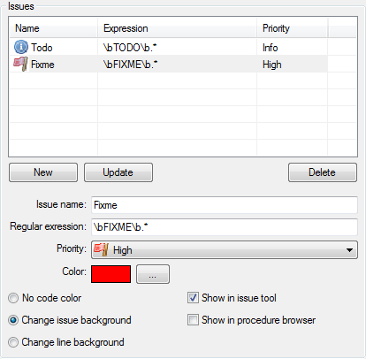
Allows to configure the collection of 'issue' markers from comments in the source code. Issue markers can be displayed in the Issues or ProcedureBrowser tool, and they can be marked within the source code with a separate background color.
A definition for an issue consists of the following:Issue name
A name for the type of issue.
Regular expression
A regular expression defining the pattern for the issue. This regular expression is applied to all comments in the source code. Each match of the expression is considered to match the issue type.
Priority
Each issue type is assigned a priority. The priority can be used to order and filter the displayed issues in the issue tool.
Color
The color used to mark the issue in the source code (if enabled). The color will be used to mark the background of either only the issue text itself, or the entire code line depending on the coloring option.
Show in issue tool
If enabled, any found issues of this type are listed in the issues tool. This option can be disabled to cause an issue to only be marked in the source code with a special background color if desired.
Show in procedure browser
If enabled, any found issues are shown as an entry in the procedure browser tool.
Editor - Session history
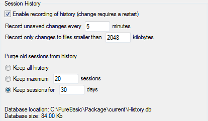
Allows to configure how the session history is recording changes.
Enable recording of history
Enable or disable the history session recording. When enabled, all the changes made to a file will be recorded in the background in a database. A session is created when the IDE launch, and is closed when the IDE quits. This is useful to rollback to a previous version of a file, or to find back a deleted or corrupted file. It's like a very powerful source backup tool, limited in time (by default one month of recording). It's not aimed to replace a real source versioning system like SVN or GIT. It's complementary to have finer change trace. The source code will be stored without encryption, so if you are working on sensitive source code, be sure to have this database file in a secure location, or disable this feature. It's possible to define the session history database location using an IDE command-line switch.
Record change every X minutes
Change the interval between each silent recording (when editing). A file will be automatically recorded when saving or closing it.
Record only changes to files smaller than X kilobytes
Change the maximum size (in kilobytes) of the files being recorded. This allow to exclude very big files which could make the database grow a lot.
Keep all history
Keep all the history, the database is never purged. It will always grows, so it should be watched.
Keep maximum X sessions
After reaching the maximum number of sessions, the oldest session will be removed from the database.
Keep sessions for X days
After reaching the maximum number of days, the session will be removed from the database.
Compiler
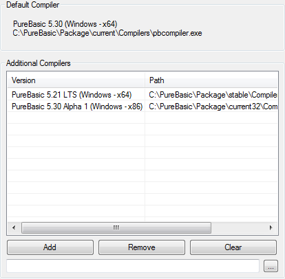
This page allows to select additional compilers which should be available for compilation in the Compiler Options. This allows switching between different compilers of the same version (like the x86 and x64 compilers) or even switching between different versions easily.
Any PureBasic compiler starting from Version 4.10 can be added here. The target processor of the selected compilers does not have to match that of the default compiler, as long as the target operating system is the same. The list displays the compiler version and path of the selected compilers.
The information used by the IDE (for code highlighting, auto complete, structure viewer) always comes from the default compiler. The additional compilers are only used for compilation.
Compiler - Defaults
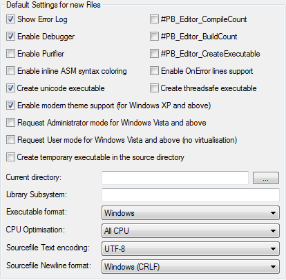
This page allows setting the default compiler options that will be used when you create a new source code with the IDE.
For an explanation of the meaning of each field, see the Compiler Options.
Debugger
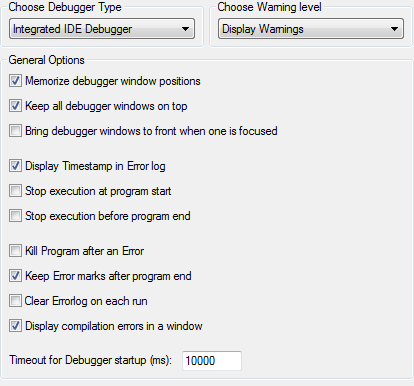
Settings for the internal Debugger, or the Standalone Debugger. The command-line debugger is configured from the command-line only.
Debugger Type
Select the type of debugger you want to use when compiling from the IDE here.
Choose Warning level
Select the action that should be taken if the debugger issues a warning. The available options are:
Ignore Warnings: Warnings will be ignored without displaying anything.
Display Warnings: Warnings will be displayed in the error log and the source code line will be marked, but the program continues to run.
Treat Warnings as Errors: A warning will be treated like an error.
See Using the debugger for more information on debugger warnings and errors.
Memorize debugger window positions
The same as the "Memorize Window positions" for in the General section, but for all Debugger windows.
Keep all debugger windows on top
All debugger windows will be kept on top of all other windows, even from other applications.
Bring Debugger windows to front when one is focused
With this option set, focusing one window that belongs to the debugger of a file, all windows that belong to the same debugging session will be brought to the top.
Display Timestamp in error log
Includes the time of the event in the error log.
Stop execution at program start
Each program will be started in an already halted mode, giving you the opportunity to start moving step-by-step, right from the start of the program.
Stop execution before program end
Stops the program execution right before the executable would unload. This gives you a last chance to use the debugging tools to examine Variables or Memory before the program ends.
Kill Program after an Error
If a program encounters an error, it will be directly ended and all debugger windows closed. This gives the opportunity to directly modify the code again without an explicit "Kill Program", but there is no chance to examine the program after an error.
Keep Error marks after program end
Does not remove the lines marked with errors when the program ends. This gives the opportunity to still see where an error occurred while editing the code again.
The marks can be manually removed with the "Clear error marks" command in the "Error log" submenu of the debugger menu.
Clear error log on each run
Clears the log window when you execute a program. This ensures that the log does not grow too big (this option is also available with the command-line debugger selected).
Timeout for Debugger startup
Specifies the time in milliseconds how long the debugger will wait for a program to start up before giving up. This timeout prevents the debugger from locking up indefinitely if the executable cannot start for some reason.
Debugger - Individual Settings
This allows setting options for the individual debugger tools. The "Display Hex values" options switch between displaying Byte, Long and Word as decimal or hexadecimal values.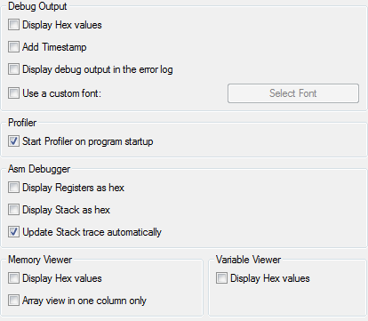
Debug Output – Add Timestamp
Adds a timestamp to the output displayed from the Debug command.
Debug Output - Display debug output in the error log
With this option enabled, a Debug command in the code will not open the Debug Output window, but instead show the output in the error log.
Debug Output – Use custom font
A custom font can be selected here for the debug output window. This allows to specify a smaller font for much output or a proportional one if this is desired.
Profiler - Start Profiler on program startup
Determines whether the profiler tool should start recording data when the program starts.
ASM Debugger – Update Stack trace automatically
Updates the stack trace automatically on each step/stop you do. If disabled, a manual update button will be displayed in the ASM window.
Memory Viewer – Array view in one column only
If the memory area is displayed in array view, this option selects whether it should be multi-column (with 16 bytes displayed in each column) or with only one column.
Debugger - Default Windows
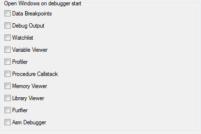
The debugger tools you select on this page will automatically be opened each time you run a program with enabled debugger.
Form
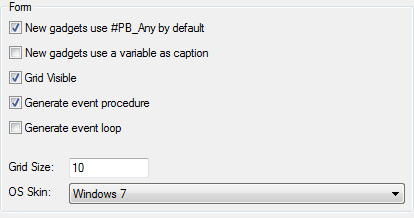
Allows to customize the integrated form designer behavior.
New gadgets use #PB_Any by default
If enabled, new gadget creation will use #PB_Any instead of static enumeration numbering.
New gadgets use a variable as caption
If enabled, new gadget will use a variable instead of static text as caption. It can be useful to easily localize the form.
Grid visible
If enabled, the grid will be visible on the form designer, to ease gadget alignment.
Generate event procedure
If enabled, an event procedure will be automatically generated (and updated).
Generate event loop
If enabled, a basic event loop will be generated for the form.
Grid size
Space between two grid points, in pixels.
OS skin
Skin to use for the form designer.
Tools Panel
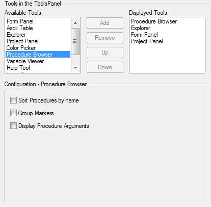
This allows configuring the internal tools that can be displayed in the side panel. Each tool that is in the "Displayed Tools" list is displayed in the Panel on the side of the edit area. Each tool that is not listed there is accessible from the Tools menu as a separate window.
Put only those tools in the side panel that you use very frequently, and put the most frequently used first, as it will be the active one once you open the IDE.
By selecting a tool in either of the lists, you get more configuration options for that tool (if there are any) in the "Configuration" section below.
Here is an explanation of those tools that have special options:
Explorer
You can select between a Tree or List display of the file-system. You can also set whether the last displayed directory should be remembered, or if the Source Path should be the default directory when the IDE is started.
Procedure Browser
"Sort Procedures by Name" : sorts the list alphabetically (by default they are listed as they appear in the code).
"Group Markers" : groups the ";-" markers together.
"Display Procedure Arguments" : Displays the full declaration of each procedure in the list.
Variable Viewer
The "Display Elements from all open sources" option determines whether the list should only include items from this code, or from all open codes.
Furthermore you can select the type of items displayed in the Variable viewer.
Help Tool
"Open sidebar help on F1": specifies whether to open the help tool instead of the separate help viewer when F1 is pressed.
Tools panel - Options
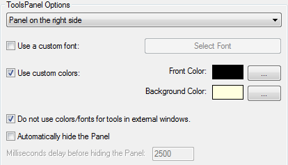
Here you can customize the appearance of the Tools Panel a bit more. You can select the side on which it will be displayed, a Font for its text, as well as a foreground and background color for the displayed tools. The font and color options can be disabled to use the OS defaults instead.
Do not use colors/fonts for tools in external windows
If set, the color/font options only apply to the Tools displayed in the Panel, those that you open from the Tools menu will have the default colors.
Automatically hide the Panel
To save space, the Panel will be hidden if the mouse is not over it. Moving the mouse to the side of the IDE will show it again.
Milliseconds delay before hiding the Panel
Sets a timeout in ms, after which the Panel is hidden if you leave it with the mouse.
Import/Export
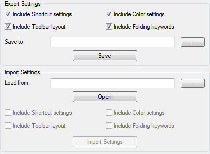
This section allows you to export the layout settings of the IDE in a platform independent format, which allows you to import them again into the PureBasic IDE on another Operating System, or to share your options with other PB users.
To export your settings, select what types of settings you want to include, select a filename and press the "Save" button.
To import settings, select the filename and press "Open". You will then see the options that are included in this file as enabled checkboxes. After selecting what you want to import, click the "Import Settings" button.
For the new settings to take effect, you have to first click the apply button.
Note: You can import the style files from the jaPBe Editor, but only the color settings will be imported.